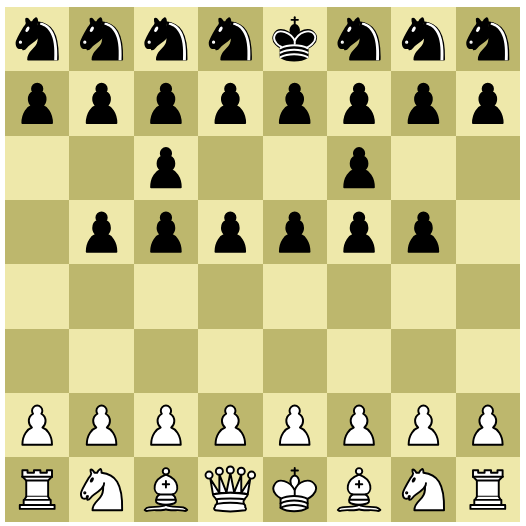
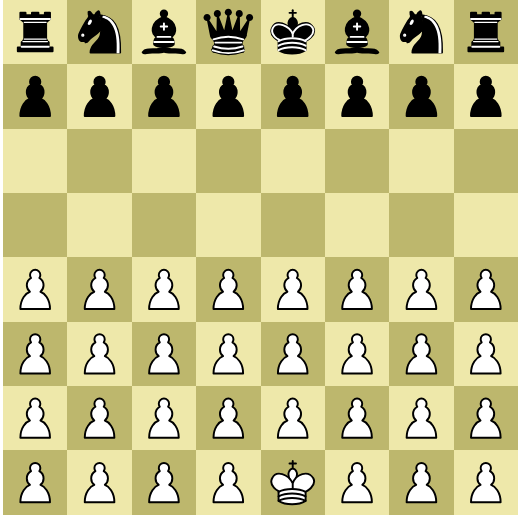
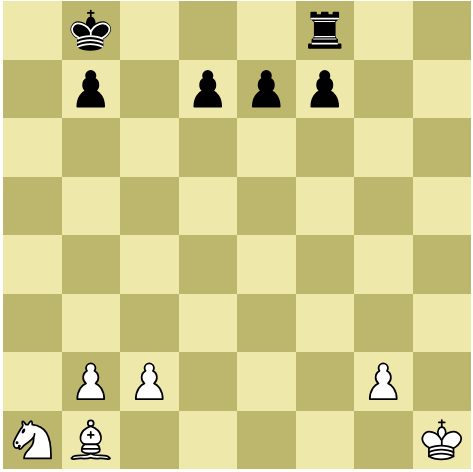
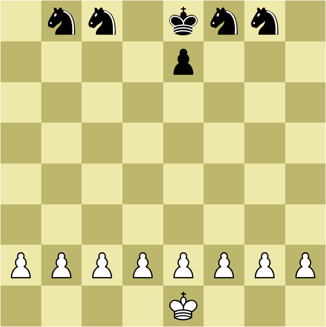
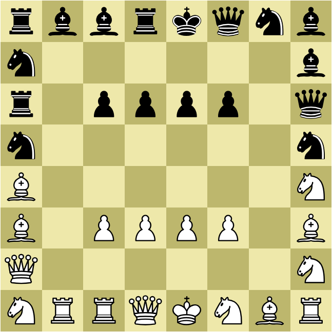
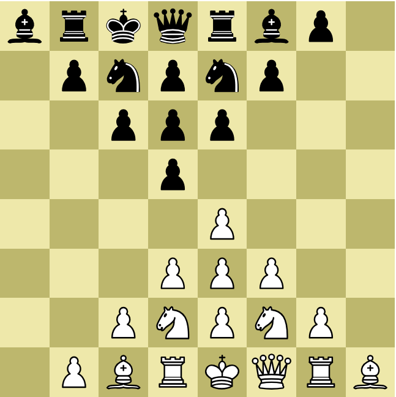
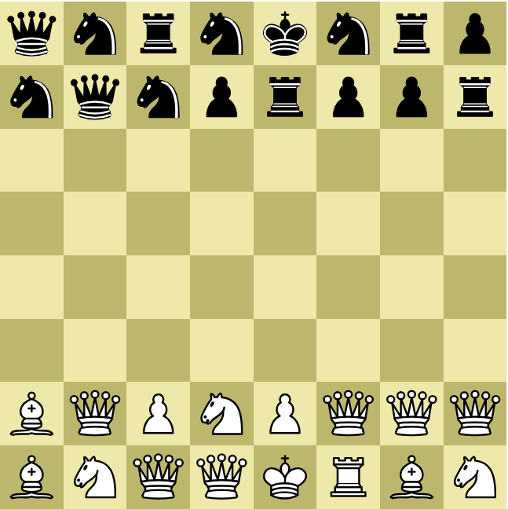
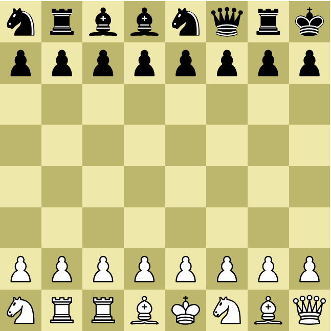

• Шахматы (варианты) •
Бот готов принять вызов. Выбери уровень сложности и сторону доски.
На главную страницу
Об игре
Обычные правила как в стандартных шахматах, но начальная позиция отличается и набор фигур изменён. Предложено несколько таких вариантов, где пропадает зависимость от заученных дебютов. Игрок с первых ходов вынужден думать стратегически, быть готовым к неожиданным тактическим взрывам, оценивать структуру доски и взаимодействие фигур.
"Три ферзя" • Queens vs Knights
Три ферзя против семи коней — асимметричный шахматный вариант (по умолчанию на доске), где сила и гибкость встречаются с манёвренностью и хаосом. У одной стороны — три ферзя: максимум дальнобойности, контроля пространства и давления. У другой — семь коней: непредсказуемые прыжки, вилки, быстрые прорывы и способность атаковать сразу в нескольких точках доски. Баланс построен не на равенстве фигур, а на контрасте стилей: тяжёлая артиллерия против лёгкой кавалерии. Партия превращается в дуэль между тотальным контролем и дерзкими манёврами.
"Чёрная орда" • Black Horde

Противостояние структуры и хаоса.
У чёрных концентрация пешек и коней создаёт плотную волну давления. Их массивная передняя линия способна душить противника численным превосходством в центре и фланговыми прорывами.
"Белая орда" • White Horde

Зеркальный асимметричный вариант "Чёрной орде".
Массированная пехотная волна белых делает ставку на стремительный натиск. Чёрные же ставят на контроль пространства дальнобойными фигурами и методичное разрушение плотной "орды".
Пешку в ферзи • Promotion

Король с самого начала активно вступает в бой.
В этой упрощённой мини игре, напоминающей эндшпиль, борьба концентрируется вокруг проходных пешек. Материальный перевес в виде дополнительного ферзя почти всегда гарантирует победу. Для этой цели в ход идут отвлечение, жертва, размен, блокировка, прорыв, подрыв и прочие тактические приёмы. Важен расчёт на 3-5 ходов вперёд. Ведь, если завладеть инициативой, права на ошибку больше нет. Расстановка сторон генерируется случайно.
"Восстание" • Peasants' Revolt

Крестьяне идут свергать знать.
Ещё один вариант с акцентом на пешечный прорыв и материальное превосходство. Пешечный вал белых создаёт давление по всем вертикалям. Чёрные кони при точной игре могут блокировать продвижение, но ошибка в расчёте приводит к немедленному прорыву.
"Свалка" • Scramble

Мгновенное столкновение в стеснённых условиях.
Асимметричный шахматный вариант с хаотичной плотной расстановкой и мгновенной тактической борьбой без необходимости дебютной подготовки. Из-за беспорядочной скученности фигур сразу возникают множественные угрозы, доминируют вилки, двойные удары, открытые шахи, перегруз защиты.
"Клин" • Wedge

Пешки формируют центральный клин.
Шахматный вариант со стандартным набором фигур, но расположенных со смещением в форму клина, что снижает значимость заученных дебютов.
"Нечестные шахматы" • Unfair!

Силы явно не равны.
Шахматный вариант с перекосом сил в пользу одной из сторон. Расстановка фигур генерируется случайно. Игрок выбирает сторону и уровень сложности бота. Испытай мастерство в условиях преднамеренного неравенства. Каждый матч становится уникальной тактической головоломкой.
Случайная расстановка • Shuffle

Фигуры перемешаны. Заученные дебюты не помогут.
Рандомизированная расстановка стандартного набора фигур по принципу Chess960, но без возможности рокировки. Этот вариант ещё известен в мире под названием Transcendental Chess ("Запредельные шахматы"). Отсутствие рокировки лишает короля безопасного убежища. Дебют здесь больше не шаблон, а техническая задача, ведь он тут не заучивается, а расчитывается. Тактическое зрение прокачивается с первых ходов.